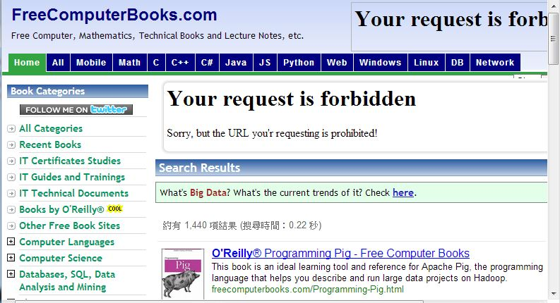

書籍短訊：電腦類的免費電子書網站
FreeComputerBooks 是筆者很常用來下載免費電子書的網站，這個網站其實是一個資訊類電子書的入口網站，經營者把他所找得到的資訊類電子書連結都蒐集在此，以下是該網站的網址。
以下是該網站的入口畫面，網站中包含了很詳細的分類，如果您需要合法的免費電腦書籍，可以考慮從

FreeComputerBooks 網站的畫面
另外、Freetechbooks 也是一個同性質的網站，網址如下：
有了這兩個網站，相信程式人會很容易的找到您要的英文免費電子書。(不過可惜的是、中文的世界筆者還沒看到類似的入口網站，如果有讀者知道請記得告訴我！)【本文由陳鍾誠撰寫】